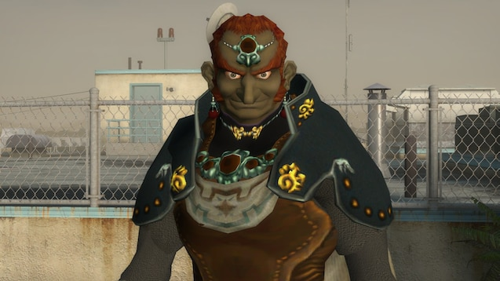

Hi I'm Quint Bunting, I'm very interested in Computer Programming for a while now, I always viewed as a carrer option but it wasn't until 7th grade when my mind was fully set. We did a project in my tech class where we used scratch to make projects. Scratch isn't very complicated but I still enjoyed the project and exploring how to make the "code" work. Since then I have learned Python and a little bit of Java, SAS, and HTML. Most of my best projects are in python, but I really hope I can learn more about other programming languages too.
Part of what I hope to ackomplish with my computer programming skills is to make my own video games, I know there are multiple computer programming jobs avaliable, some that are easier and pay more but I have enjoyed and dreamed of making video games ever since I was young and now I actually made a video game using pygame once I learn Java and C++ I will switch over to those. I have many ideas for video games a the moment, but i'm struggling to get motivated.
As for my carrer, I'm really don't care as long as it involves computer programming, I would prefer to program video games because I find it more fun, but pretty much all programming can be fun as long as i'm coding something interesting. Also computer programming carrers make a lot of money so i'm looking forward to that.
I don't know what to write here so I'm just going to state the union. My fellow Americans we are all going to die. The end.